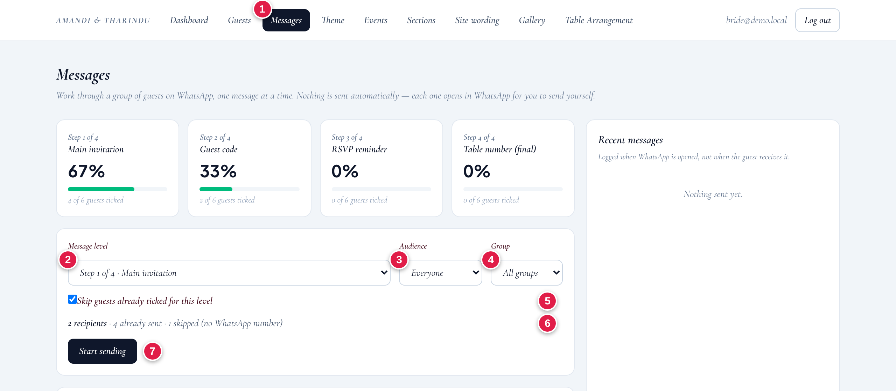
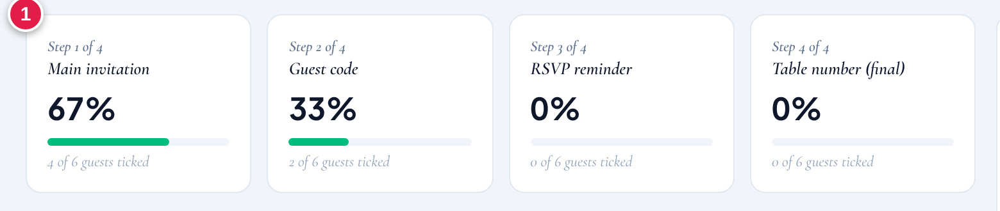
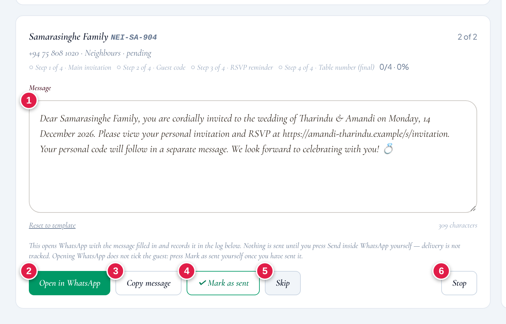
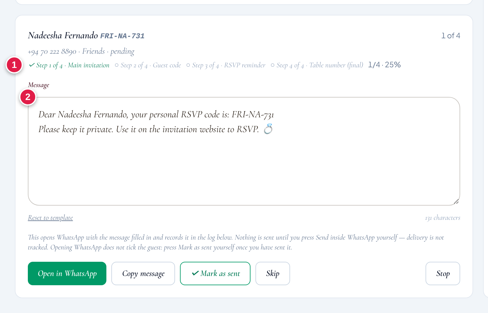
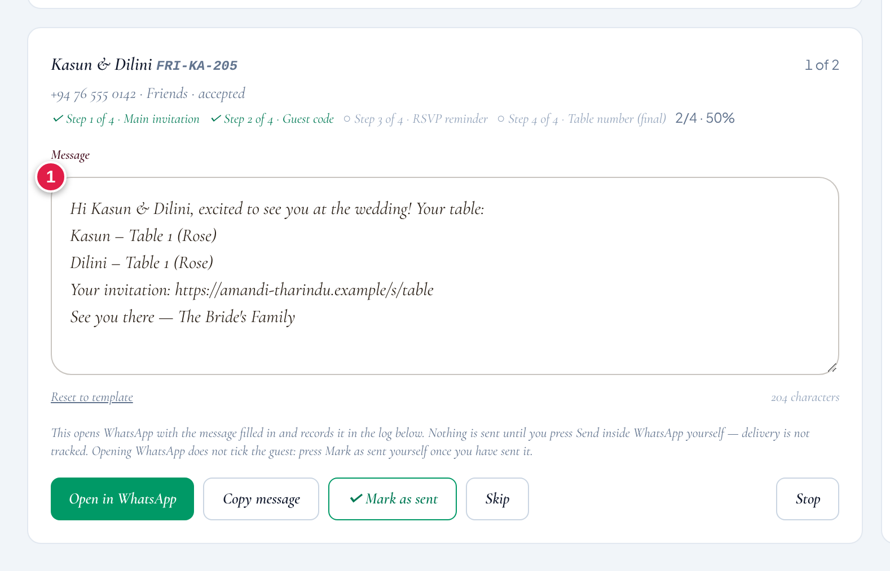
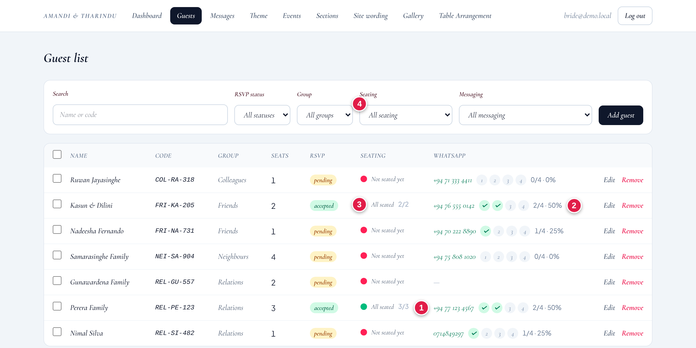
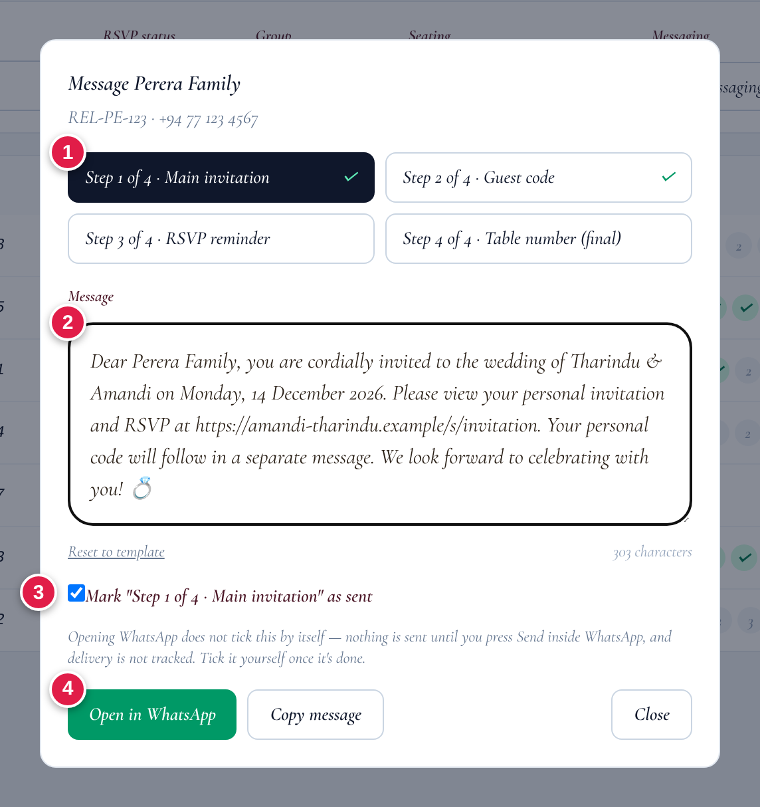
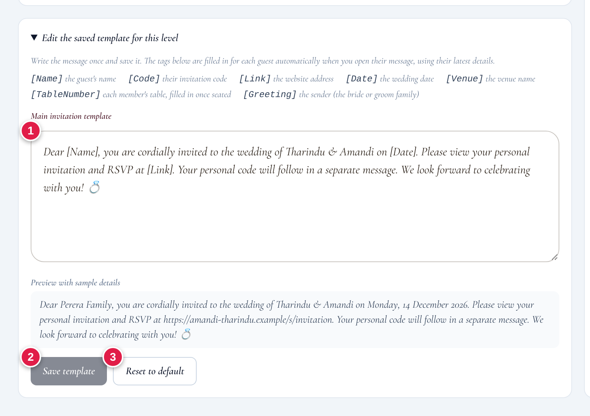
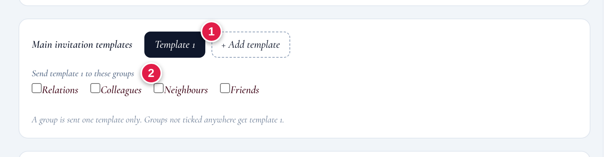

A simple, step-by-step guide to the Message Center — what to press, in what order, and why.
💍
For the admin who sends the WhatsApp messages.
No technical skill needed. Every screenshot in this guide is from the real website
(shown with sample guests, so your own list will have your own names).
START HERE
Three things to know first
🙋
You press Send
The website never sends anything by itself. It opens WhatsApp with the message already typed. You press Send, from your own WhatsApp.
📱
Use your phone
On a computer or WhatsApp Web, emoji like 💍 can turn into “�”. The phone app shows them correctly.
👨👩👧
One per invitation
A family has one code and one number. Send each message once per family, not once per person.
What you need on your phone
An Android phone or iPhone with the WhatsApp app, signed in with your own number, and kept up to date.
A phone browser (Chrome on Android, Safari on iPhone) and an internet connection.
Sign in to the admin site on the phone: your website address followed by /admin. Then open Messages.
Pop-ups allowed for the site in the browser settings. If they are blocked, the Open in WhatsApp button does nothing.
Do your sending on the Messages page. It fits a phone screen. The Guests page is a wide table and needs sideways scrolling.
How it works on the phone
Press Open in WhatsApp → the WhatsApp app opens with that guest’s chat and the message ready → press Send → go back to the browser → press ✓ Mark as sent.
If the phone asks which app to use, choose WhatsApp.
Check before you send
Look at the message in WhatsApp. If you see “�” where an emoji should be, do not send. Go back, press Copy message, and paste the text into the chat instead. Pasting keeps every emoji.
THE PLAN
The 4 messages every guest gets
Send them in this order. The website calls each one a level, and tracks them with ticks.
Step 1 of 4
Main invitation
The invitation and the website link. No code inside.
Goes to everyone
Step 2 of 4
Guest code
Only the guest’s personal RSVP code, in its own message.
Goes to everyone
Step 3 of 4
RSVP reminder
A gentle nudge to reply.
Only “Pending”
Step 4 of 4
Table number
Where they will sit.
Accepted + seated
The website picks the right audience for each step automatically. You can change it if you need to.
Why the code goes in a separate message
The code is the guest’s private key to the RSVP page. If the invitation and the code were in one message, a guest could forward it to a friend, and the friend could use the code too.
Step 1 · Main invitation“…view your invitation at the link. Your code will follow in a separate message.”
➜
A guest forwards it to a friendThe friend gets the link but ✗ no code, so cannot RSVP as your guest.
Step 2 · Guest code“Your personal RSVP code is: FRI-NA-731. Please keep it private.”
Always send Step 1 first, then Step 2 straight after.Do not send the code before the invitation. And never post a guest’s code in a group chat.
Suggested order for the whole wedding
When
What to do
First
Step 1 · Main invitation → to everyone. Mark each as sent.
Straight after
Step 2 · Guest code → to everyone. Before sending, check the guest’s ticks show ✓ Step 1 (see “Step 2 · Guest code” below).
1–2 weeks later
Step 3 · RSVP reminder → the audience is already “Pending RSVP”, so people who replied are left out.
When seating is finished
Step 4 · Table number → only to guests who accepted and are seated.
THE SCREEN
The Messages page, step by step

The Messages page (real screenshot, sample guests)
1Open Messages in the top menu.
2Message level: pick Step 1, 2, 3 or 4.
3Audience: fills in by itself (Everyone, Pending, Accepted…).
4Group: optional. Send to one group at a time, like Friends.
5Keep “Skip guests already ticked” switched on, so nobody gets the same message twice.
6The count line tells you who is on the list (see below).
7Press Start sending when it looks right.
Reading the count line
2 recipients
People you are about to message.
4 already sent
Already ticked for this level, so they are hidden from the list.
1 skipped (no WhatsApp number)
No number saved. Go to Guests → Edit and add one, then they appear.
1 waiting for a table
Step 4 only. This guest is not seated yet, so they are left out for now.
The progress cards

One card per step shows how far you have got. Use them to see what is left.
SENDING
Sending to each guest
After you press Start sending, the first guest appears. Do the same three things for every guest:
📲
1. Open in WhatsAppWhatsApp opens with the message ready
➜
➤
2. Press SendInside WhatsApp, yourself
➜
✅
3. ✓ Mark as sentBack on the website. It ticks the guest and moves to the next one

A guest’s card during a run. Here: the Step 1 invitation for a family.
1The message, already filled in with the guest’s name. You can edit it for this one guest.
2Open in WhatsApp opens the chat with their number.
3Copy message copies the text so you can paste it yourself (use if emoji look broken).
4✓ Mark as sent ticks the guest and goes to the next.
5Skip moves on without ticking (not ready for this guest).
6Stop ends the run. Your ticks are saved.
Opening WhatsApp does not tick the guest.Only ✓ Mark as sent does. If you forget, the guest shows up again next time. A tick means “I sent it”. It does not prove the guest received it.
When you reach the end you will see “That is everyone in this group.” Pop-up blocked? Allow pop-ups for the site and try again.
STEP 2
The guest code message

Step 2 for one guest. The message carries only their code.
1Check the ticks line first. It shows what this guest already has. Before sending the code, you want ✓ Step 1 here. If it is empty, send them Step 1 first.
2The message holds the guest’s own code.
Why this check mattersStep 2 lists everyone not yet ticked for Step 2, even if they have not had Step 1. The ticks line is how you catch that.
STEP 3 & 4
Reminder and table number
Step 3 · RSVP reminder
Send this a week or two after the invitation. The audience is already set to Pending RSVP, so guests who have replied are left out. It works exactly like Step 1: Start sending → Open in WhatsApp → Send → ✓ Mark as sent.
This one repeats the codeThe reminder includes the guest’s code again, so they do not have to scroll back to find it. That is fine for a reminder to the guest themselves, but remember that it should not be forwarded either.
Step 4 · Table number

Step 4 for a couple. Each person is listed with their own table, filled in automatically.
Only guests who accepted and are seated appear here. Everyone else shows as “waiting for a table”.
FAMILIES & COUPLES
When one invitation has many people
An invitation like Perera Family is one invitation, not three:
One name
Perera Family
One code
REL-PE-123
One number
+94 77 123 4567
Many people
Nimal, Kamala, Sunil
The right way
Send each step once, to the number saved on that invitation. Ask that person to tell the rest of the family. The message says “Dear Perera Family”, which is correct. Do not message each member separately.
Wait for “All seated” before Step 4

The Guests page. Real screenshot, sample guests.
1Click the guest’s number to open their message pop-up.
2The small circles 1–4 show the four steps. A green ✓ means sent.
3Seating column: wait for “All seated” before sending Step 4.
4Use the Seating filter to see who is still partly or not seated.
Why wait?A family gets the Step 4 message as soon as one person is seated, and the message would list only the people seated so far. Waiting for “All seated” means you send it once.
To change which number a family receives messages on: Guests → Edit → WhatsApp number. To see who is in the family: Edit → “People in this party”. Friends who share one code but each have their own phone? See the next two pages.
SHARED CODE · SEPARATE PHONES
One code, many people: the manual method
Example: Hydromony Friends are 5 or 6 office friends. They share one code, so they can all see each other on the RSVP page. But each has their own WhatsApp number, and each should get a message with their own name.
Not built yet · developer work needed
The website saves one WhatsApp number per invitation. The people inside it have names only, no numbers. So the Messages page can open WhatsApp for just one person in the group, and the greeting says the group name (“Dear Hydromony Friends”).
Until it is improved (see the end of this section), send to the rest by hand, as below.
What the message looks like
What the website fills in“Dear Hydromony Friends, you are cordially invited…”
➜
What you send to each person“Dear Samira, you are cordially invited…”
Step by step, for each person in the group
Do one message level at a time (all of Step 1, then all of Step 2…), not person by person across all four levels.
Find the people. Guests → Edit on the group → People in this party. Write the names and their phone numbers on the tracker (next page).
Start the run as usual (Messages → pick the level → Start sending) until the group’s card appears.
Change the name in the message box. Replace “Hydromony Friends” with the first person’s name, for example “Samira”. The box is editable. Your edit stays while you are on that card.
Press “Copy message”. Do not press Open in WhatsApp for the other friends: it opens the chat of the one number saved on the group, which is the wrong person for everyone else.
Open that person’s own chat in WhatsApp (search their name or number) and paste.
Check the name (see the checks below), then press Send.
Go back, change the name to the next friend, and repeat steps 4 to 6. Tick the tracker after each one.
Only when everyone in the group has the message, press ✓ Mark as sent. The website keeps one tick per group, not per person, so do not tick early. If you must stop halfway, press Stop (do not tick) and carry on later from your tracker.
Name check, every single time, before you press SendTwo names must match: the name inside the message (“Dear Samira”) and the contact name at the top of the WhatsApp chat. When you copy and paste again and again, it is very easy to send “Dear Samira” to Kasun. If they do not match, stop. Delete the message and fix it.
SHARED CODE · SEPARATE PHONES
Cautions, tracker and the future fix
Mistakes to watch for
Wrong name pasted. The text still says the previous person’s name. Read the first line of every message before sending.
Similar names or the wrong chat. Samira, Sameera and Samiran look alike. Compare letter by letter with the name at the top of the WhatsApp chat.
Never use WhatsApp “Forward”. It keeps the old name, and marks the message “Forwarded”. Always copy and paste a fresh message.
Do not send the code and the invitation together. The same rule applies to each friend: Step 1 first, then Step 2 to the same person.
Step 4 (table): the message lists everyone’s tables. You can keep it, or cut it down to that person’s own line so they only see their own table.
They share one code, so they can see each other
Everyone using the same code can see who else is in the group on the RSVP page. If that is not wanted, the group can be split into separate invitations, one per person, each with its own code and number (Guests → Add guest, “Individual”). Then the normal method works with no copy and paste. This is your decision to make with Tharindu.
Printable tracker (one per group)
Group name: ______________________________ Code: _______________
Person’s name
Step 1 Invitation
Step 2 Code
Step 3 Reminder
Step 4 Table
Name checked ✓
☐
☐
☐
☐
☐
☐
☐
☐
☐
☐
☐
☐
☐
☐
☐
☐
☐
☐
☐
☐
☐
☐
☐
☐
☐
☐
☐
☐
☐
☐
When every box in a column is ticked, press ✓ Mark as sent on the website for that level. Then the website’s progress matches yours.
Improvement to build later · for the developer What is missing: a WhatsApp number for each person in a group, not just one for the whole group. What it would do: the Messages page would step through each person in the group, open their own chat, and fill in their own first name (“Dear Samira”), so no typing or copy and paste is needed. Ticks would be kept per person, not per group. What it needs: a change to the database (a number for each person) and to the Guests and Messages pages. Until this is built and tested, use the manual method above.
ONE GUEST
Sending to just one guest
Good for a quick message, a late guest, or fixing a mistake. Go to Guests and click the guest’s WhatsApp number.

The pop-up for one guest
1Four tabs, one per step. A ✓ on a tab means it is already ticked.
2The message, ready to send. You can edit it.
3Tick “Mark … as sent” after you press Send in WhatsApp. Untick it if you ticked by mistake or need to send again.
4Open in WhatsApp opens their chat.
RememberHere the tick is a checkbox you control. Opening WhatsApp does not tick it.
WORDING
Changing what the messages say
On the Messages page, pick the level, then open “Edit the saved template for this level”.

The template editor
1Change the words in the box. The Preview below shows a sample.
2Save template keeps your changes.
3Reset to default brings back the original words.
Tags: they fill in by themselves for each guest
Tag
Becomes
Tag
Becomes
[Name]
the guest’s name
[Date]
the wedding date
[Code]
their code
[Venue]
the venue
[Link]
the website address
[TableNumber]
their table(s)
[Greeting]
who it is from
Keep [Code] out of Step 1.That is the whole reason the code has its own message.
Different invitation wording for different groups
Step 1 can keep up to 4 templates, for example a formal one for relatives and a casual one for friends.

Template buttons and the group tick-boxes
1+ Add template makes a copy of Template 1 to edit.
2Tick the groups that should get the open template. A group gets one template only. Unticked groups get Template 1.
Wording is shared with your partner’s admin account, so tell each other before you edit.
HELP
If something goes wrong
Problem
What to do
A guest is missing from the list
They may have no WhatsApp number (see the “skipped” count), may already be ticked, or a filter is hiding them. Try Audience = Everyone and Group = All groups.
I sent it but forgot Mark as sent
Open the guest on the Guests page (click their number) and tick the step. Do not send twice.
I ticked someone by mistake
Guests page → click their number → untick that step.
WhatsApp does not open
Allow pop-ups for the site in your browser. Nothing was saved. Try again.
Emoji look like “�”
You are probably on a computer or WhatsApp Web. Use your phone, or press Copy message and paste into WhatsApp.
“No usable WhatsApp number”
The number is wrong or too short. Fix it in Guests → Edit. Sri Lankan numbers like 071 234 5678 are fine.
I sent the code before the invitation
It is okay. Send Step 1 afterwards and tick it. The order matters for safety, not for the website working.
One code, but each friend has their own phone
Use the manual method: change the name in the box, press Copy message, paste into that person’s own chat, check the name, send. Do not press Open in WhatsApp for them. See “One code, many people”.
The page says “Unauthorized”
Sign in again at your website address followed by /admin.
The golden rules
Step 1 first, then Step 2 right after. The invitation never carries the code.
Send once per invitation, not once per person in the family.
Send in WhatsApp, then press ✓ Mark as sent. Opening WhatsApp alone does not tick.
Do not send Step 4 until the family is “All seated”.
Never post a guest’s code in a group chat.
Shared code, separate phones: check the name before every Send. The name in the message must match the WhatsApp chat.